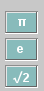

This is a free online math/scientific calculator similar to those from TI, Casio, HP and others. It supports functions for algebra and trigonometry.
Enter a formula either by typing on the keyboard (see keyboard input below),
pressing the buttons on the calculator with the mouse,
or a mixture of both. Type in the formula as you would say it, then press = or the keyboard
enter key. For example:
| Find the value of the equation: | by pressing the calculator buttons: | |||||||||
|
||||||||||
| The display will show: | sqrt(3^2+4^2) = 5 |
Functions can be entered by
The table below shows what to type for each function. The function has an argument which must be in parentheses, for example tan(12). When you enter a function from the screen buttons, the first parenthesis is entered for you. For example when you press the cos button, it enters "cos ("
| Function | Button | Typed in | Description |
| Sine | sin |
sin(x) | The trigonometry sine function*. See Trigonometry Overview |
| Cosine | cos |
cos(x) | The trigonometry cosine function*. See Trigonometry Overview |
| Tangent | tan |
tan(x) | The trigonometry tangent function*. See Trigonometry Overview |
| Arc Sine | sin-1 |
asin(x) | The trigonometry inverse sine function*. The angle whose sine is x. See Trigonometry Overview |
| Arc Cosine | cos-1 |
acos(x) | The trigonometry inverse cosine function*. The angle whose cosine is x. See Trigonometry Overview |
| Arc Tangent | tan-1 |
atan(x) | The trigonometry inverse tangent function*. The angle whose tangent is x. See Trigonometry Overview |
| Square root | √ |
sqrt(x) | Square root of x. |
| Logarithm | log10 |
log(x) | The log base 10 of x. The power to which you must raise the base (10) to get x. |
| Ten to the power x | 10x |
pow(10,x) | Ten raised to the power x. |
| x squared | x2 |
x^2 | x raised to the power 2. |
| Natural Log | loge |
ln(x) | The log base e of x. The power to which you must raise the base (e - approximately 2.718) to get x. |
| Exp | ex |
exp(x) | e (approx 2.718) raised to the power of x. |
|
The following functions have no buttons on the calculator. They can be entered by typing them on the keyboard only. |
|||
| Min | min(a,b) | Returns a or b whichever is smallest. | |
| Max | max(a,b) | Returns a or b whichever is largest. | |
| Abs | abs(x) | Returns the absolute value of x (always positive) | |
| Pow | pow(x,y) | Returns x raised to the power y. pow(2,3) = 8 | |
| Round | round(x) | Returns x rounded off to the nearest whole number | |
| floor | floor(x) | Returns the highest integer less than or equal to x | |
| ceil | floor(x) | Returns the smallest integer greater than or equal to x | |
* Note: The six trigonometry functions will operate in degrees or radians depending on the setting of the control located just below the display window.
Tan() special note: If you calculate tan(pi/2) it should be an error since the tan of a right angle is undefined. However, pi in a computer is an approximation, with the result that tan(pi/2) calculates to a very large number instead.
If the calculator is in degrees mode, then tan(90), tan(270) etc will in fact produce an error, since they are undefined.
Once you press the '=' button or press 'Enter', the expression is evaluated according to normal algebraic operator precedence. That is, parentheses first, followed by exponentiation, multiply, divide, add and subtract. (PEMDAS)
| Function | Button | Typed in |
| Add | + |
+ |
| Subtract | – |
- |
| Multiply | × |
* |
| Divide | ÷ |
/ |
| Exponent | ^ |
^ |
 |
The three constants keys enter the values at high precision (even if only 3 digits are displayed).
From the top:
|
There are four memory locations you can use to store temporary results, named A,B,C and D. Under each is a button labeled 'set'. When you press 'set' the current result is copied into that memory. When a memory contains a value, there is a dark border around the memory button. If you hover the mouse over the button it will show the current value stored in it.
Pressing "CLR" also clears the memory locations.
To use the contents of a memory in a calculation, simply click on the corresponding memory button and its value will be entered into the calculation. On the keyboard enter the letter a,b,c or d. It is not case sensitive. Using a memory that has nothing in it results in an error.
Using this control, you can select how many significant digits are displayed in the results. This only controls the display. Internally, all calculations are performed and stored using the maximum possible precision. For example, with three digits displayed, enter 1 0 ÷ 3 = to see the result 3.333. Then press × 3 = and you will see that the result is 10, not 9.999.
It controls the number of significant digits after the point. For example, if the result was 1.002782, and you displayed 3 digits you get 3 digits after the zeros after the point, or 1.00278. Trailing zeros are never displayed.
| Automatic multiplication |
If a function (such as sin() ) is preceded by a number, the calculator assumes you want to multiply them. For example 3cos(2.1) will be automatically treated as if you entered 3*cos(2.1): three times the cosine of 2.1 Note: This feature can mislead you. For example if you enter 1/2sin(.5) the calculator inserts a multiply between the 2 and the sin. Since there are no parentheses, the calculator executes it from left to right so it operates as though you meant (1/2)sin(.5). |
| Automatic chaining | If the first thing you enter on a line is multiply, divide, add, subtract or exponent, it assumes you want to work on the the result from the previous line. For example, if you enter 1 + 1 = and get the answer 2. Then enter + 3 =. It will add the 3 to the previous answer and get 5. |
| Automatic parenthesis balancing | When you press = or enter, it will automatically add enough closing parentheses to balance them. For example, if you enter ( 4 + 6 = it will add an extra closing parenthesis and get the answer 10. Note: This may not always produce the desired result. It is best to always enter the correct expression yourself. |
| Function chaining | If the last thing on a line is a function with no argument, then it assumes you want the previous result to used as the argument.
For example, enter 2 + 6 = and get the answer 8. Then enter sin =. It will find the sine of 8, the previous result. |